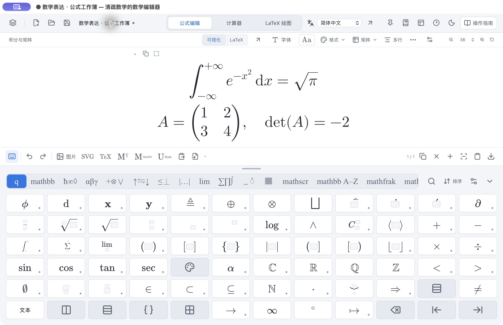

代数与微积分
四则运算、化简、展开、因式分解、数值近似、求导、不定积分、定积分、极限、求和、乘积与泰勒展开。
为 Mac 而作的数学工作台
在一份工作簿里，编写公式、完成计算、绘制图形。可视化画布与 LaTeX 源码相连，数学键盘把常用符号与结构放在手边。
Apple 芯片 Mac macOS 14 及以上 激活码版 2.0.17

一份工作簿，三种表达
从课堂板书、讲义公式，到计算草稿与论文配图，在熟悉的 Mac 工作方式中自然衔接。
01 / 公式编辑
用鼠标选取结构，用键盘连续输入，在可视化画布和 LaTeX 源码之间自由切换。
\frac\int\sum\mathbb\mathrm\text02 / 本机计算
切换到计算器，选择操作、变量与假设，再执行计算。精确结果、数值近似和相关条件一起呈现，计算记录随工作簿保留。
四则运算、化简、展开、因式分解、数值近似、求导、不定积分、定积分、极限、求和、乘积与泰勒展开。
Fourier 级数、Laplace 正反变换、Fourier 正反变换；通过变量、区间和参数设置组织计算，结果保留相应条件。
矩阵运算、行列式、逆、秩、特征值与分解，以及方程组、常微分方程、初值问题和 Hermite 插值多项式。
从函数目录插入 Gamma、Beta、Bessel、Airy、椭圆积分、超几何、ζ 等模板，结合参数与变量假设继续求导、变换或数值计算。
03 / LaTeX 绘图
鼠标操作与绘图源码相互配合，从几何构造到交换图、函数图像与论文配图，围绕同一个绘图工程展开。
在坐标系中放置点，连接线段、箭头、圆和多边形。通过精确坐标、吸附、交点、中点、平行线与垂线工具构造图形，拖动时更新关联对象。
绘制二维函数、参数曲线、极坐标曲线、隐函数和数据曲线；叠加多个图层，设置颜色、范围和参数滑块，并用平移、缩放与读值工具观察细节。
直接输入 x^2 + y^2 + z^2 = 1 等方程，保留原方程，使用三维网格呈现曲面。可在同一坐标系叠加隐式、显式和参数曲面，分别设置颜色、透明度与范围。
编辑节点、连接、弯曲箭头和数学标签，组织交换图与自然变换。配合 TikZ / PGFPlots 源码、本机 TeX 编译，导出 PDF、SVG、PNG，用于讲义与论文。
激活码版的真实绘图编译使用本机 MacTeX / TeX Live。软件中的“TeX 环境”提供引擎与宏包检测、官方下载入口和安装后的重新检测。
通过邮箱了解版本、价格和交付方式，确认适合自己的使用需求。
打开软件激活页面，复制当前 Mac 的设备码，与作者确认对应授权。
收到 .qingshu-license 文件后直接导入，也可粘贴激活码。完成后进入公式编辑、计算器与 LaTeX 绘图。
清疏知与
版本咨询、激活与使用支持，都可以通过邮箱联系作者。